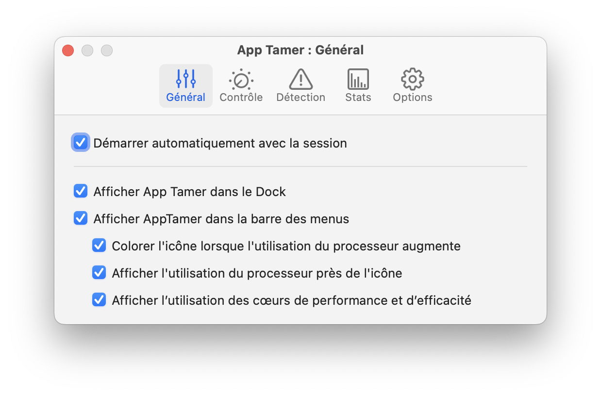
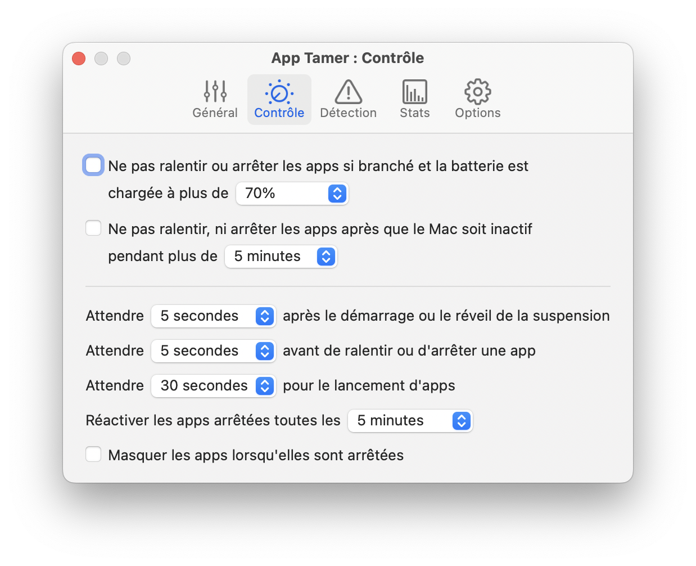
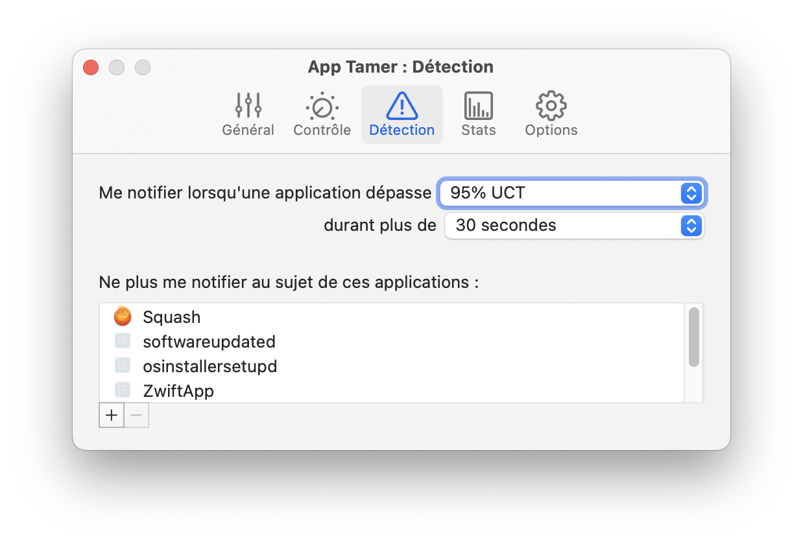
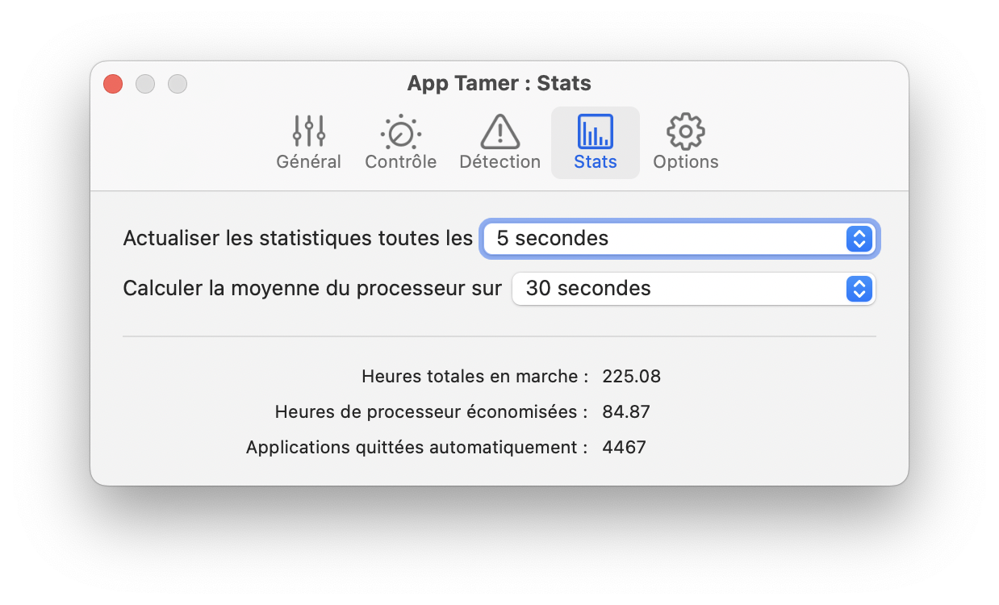
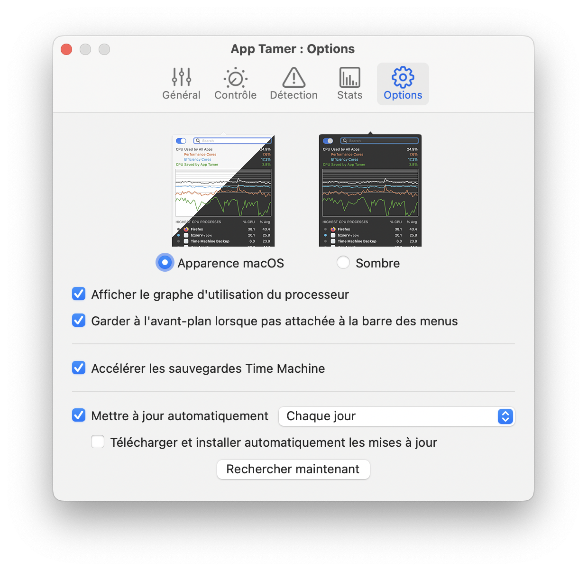

Aide App Tamer
Aide App TamerPréférences
Vous pouvez accéder aux préférences d’App Tamer à partir du menu utilitaire. Il suffit de cliquer, tout en maintenant la touche Contrôle enfoncée, sur l'icône d'App Tamer dans la barre des menus ou de cliquer sur l'icône de l'utilitaire dans le coin inférieur droit de la fenêtre d'App Tamer, puis de sélectionner Préférences dans le menu.
Les préférences sont divisées en cinq onglets, comme suit.
Général

Démarrez automatiquement avec la session
Cochez cette case pour lancer automatiquement App Tamer lorsque vous vous connectez.
Afficher App Tamer dans le Dock
App Tamer peut apparaître dans le Dock comme une application régulière, ou vous pouvez désactiver cette case à cocher et y accéder uniquement à partir de son icône dans la barre des menus.
Afficher l'icône App Tamer dans la barre des menus
Cela active et désactive l'icône de la barre des menus d'App Tamer. Vous voudrez généralement le garder activé, car il fournit un accès plus rapide aux contrôles d'App Tamer, ainsi qu'un indicateur utile de la quantité de traitement utilisée.
Colorer l'icône lorsque l'utilisation du processeur augmente
Comme les applications utilisent plus le processeur, l'icône d'App Tamer dans la barre des menus passera du noir et blanc au jaune en passant par le rouge. Cela vous donne une indication rapide de la quantité de puissance de traitement utilisée, vous permettant de voir facilement quand une application monopolise votre processeur.
Afficher l'utilisation du processeur près de l'icône
Lorsque cette option est activée, App Tamer vous montrera le pourcentage du processeur utilisé comme nombre exact.
Afficher l'utilisation des cœurs performants et efficaces
Cette option n'est affichée que sur les Mac Apple Silicon. Son activation affiche deux chiffres supplémentaires à droite de l'utilisation du processeur, donnant des pourcentages distincts pour les cœurs performants et efficaces. Le nombre de cœurs performants est suivi d'un « P », dont le pourcentage du cœur efficace est marqué d'un « E ».
Contrôle

Ne pas ralentir ou arrêter les applications si branché et la batterie est chargée à plus de X %
Si vous utilisez App Tamer principalement pour économiser l'énergie de la batterie de votre ordinateur portable, l'activation de cette option ralentira et n'arrêtera vos applications que lorsque l'alimentation doit être économisée. Cela prolongera votre autonomie pendant la batterie et accélérera le temps de recharge lorsque vous vous le brancherez.
Vous pouvez affiner ce réglage en choisissant le pourcentage de la charge de batterie disponible auquel App Tamer cesse de gérer vos applications.
Ne pas ralentir, ni arrêter les apps après que le Mac soit inactif pendant plus de X minutes
Si vous souhaitez que toutes les applications s'exécutent à pleine vitesse lorsque vous êtes loin de votre Mac, activez ce réglage. Définissez le délai pour spécifier un temps d'inactivité suffisamment long pour que vous ne fassiez pas seulement une pause pour lire quelque chose à l'écran, mais que vous ayez réellement laissé votre Mac inactif.
Attendre X secondes après le démarrage ou le réveil de la suspension
After your Mac starts up or wakes from sleep, applications often need some time to do housekeeping to update themselves for the system's new state. This delay gives them a short window of time to do that.
Attendre X secondes avant de ralentir ou d'arrêter une application
C'est un réglage important. Vous voulez généralement laisser un délai entre le moment où une application est envoyée en arrière-plan et le moment où App Tamer l'arrête. De nombreuses applications ne mettent pas réellement de données dans le presse-papiers tant qu'elles ne sont pas en arrière-plan, vous devez donc leur donner le temps de le faire. En outre, de nombreuses personnes cliqueront dans un navigateur Web pour commencer à télécharger un fichier, puis iront à une autre app, mais le téléchargement ne démarre pas réellement avant 5 ou 10 secondes. Laisser un peu de temps pour «les choses à régler» rendra votre expérience App Tamer beaucoup plus fluide.
Attendre X minutes pour que les apps s’ouvrent
App Tamer donne à une application un certain temps de lancement avant d'envisager de l'arrêter. Si vous double-cliquez sur Photoshop, par exemple, puis passez à une autre application en attendant que Photoshop termine son lancement, vous voulez qu'App Tamer laisse Photoshop terminer son traitement de démarrage. Assurez-vous que ce réglage est assez long pour permettre que cela se produise.
Réactiver les apps arrêtées toutes les X minutes
Les applications et macOS ont besoin d'un peu de temps de temps en temps pour s'occuper des tâches de maintenance routinière, du nettoyage, etc. App Tamer réactive toutes les applications un instant pour permettre à ces choses de se produire. Ce réglage détermine la fréquence à laquelle cela se fait.
Masquer les applications lorsqu'elles sont arrêtées
Ce réglage vous permet de masquer automatiquement toutes les fenêtres d'une application ralentie ou arrêtée pour indiquer qu'elle n'est pas en cours d'exécution et pour la garder à l'écart. Cliquer sur l'icône de l'application dans le Dock ou utiliser l'onglet commande pour y revenir à la vue et la réveillera.
Détection

Me notifier lorsqu'une application dépasse X% UCT durant plus de Y secondes
App Tamer vous avertira chaque fois qu'une application utilise une quantité excessive de puissance de traitement, où «excessif» est défini par ces chiffres.
L'alerte vous donnera la possibilité de permettre à l'utilisation de se poursuivre pour le moment, de ralentir ou d'arrêter l'application, ou d'ignorer définitivement toute autre utilisation excessive.
Ne plus me notifier au sujet de ces applications
L'ajout d'une application à cette liste empêchera App Tamer de vous avertir de son utilisation du processeur, même si elle dépasse le seuil de notification.
Notez que lorsque vous recevez une notification au sujet d'une application et que vous choisissez d'ignorer son utilisation élevée, l'application est automatiquement ajoutée à cette liste. Pour réactiver la détection pour cette application, revenez ici et supprimez l'application de la liste.
Avertissement : En définissant un seuil de notification bas, App Tamer utilisera elle-même plus de temps de traitement, car App Tamer doit surveiller toutes vos applications de plus près.
Statistiques (Stats)

Actualiser les statistiques toutes les X secondes
Cela détermine à quelle fréquence App Tamer met à jour ses statistiques du processeur. Plus vous choisissez fréquemment de mettre à jour les statistiques, plus le temps de processeur App Tamer lui-même utilisera. Nous vous recommandons de régler l'intervalle à 3 secondes ou plus.
Calculer la moyenne du processeur sur X secondes
App Tamer's calcule l'utilisation moyenne du processeur en mesurant l'utilisation du processeur de chaque application sur une certaine période de temps. Ce menu vous permet de sélectionner cette durée.
Nombre total d'heures d'exécution, heures UCT enregistrées et fermeture automatique des apps
Ce sont des statistiques qu'App Tamer conserve pour vous faire savoir ce qu'il a fait pour vous. Les mesures sont cumulatives sur toute la durée d'installation et d'exécution d'App Tamer.
Options
Apparence

La fenêtre principale d'App Tamer est normalement de couleur claire, conformément au reste de l'interface utilisateur de macOS. Les versions précédentes d'App Tamer utilisaient une apparence sombre, et vous pouvez choisir cela si vous le préférez. Notez que l'apparence sombre sera également utilisée automatiquement si vous choisissez le mode sombre dans le panneau Général des Préférences Système.
Afficher le graphe de l'utilisation du processeur
Le graphe de l'utilisation du processeur affiché en haut de la fenêtre d'App Tamer peut être masqué si vous préférez simplement avoir les listes de processus en cours d'exécution et apprivoisé.
Garder à l’avant-plan, lorsque pas attaché à la barre des menus
Si vous cliquez sur l'icône d'App Tamer dans la barre des menus, sa fenêtre descend comme un menu le ferait. Si vous cliquez sur le haut de cette fenêtre avec la souris et que vous la faites glisser loin de la barre des menus, elle se transforme alors en une fenêtre régulière qui restera à l'écran pendant que vous faites autre chose.
En cliquant sur la case à cocher «Garder à l’avant-plan», cette fenêtre flotte au-dessus des autres fenêtres de votre écran afin qu'elle soit toujours visible.
Accélérer les sauvegardes Time Machine
Normalement, macOS exécute des sauvegardes Time Machine avec une faible priorité afin qu'elles n'aient pas d'impact sur les performances du système. Cela peut parfois prendre beaucoup de temps à terminer les sauvegardes. Activer cette case à cocher force les sauvegardes Time Machine à s'exécuter avec une priorité plus élevée, ce qui les rend beaucoup plus rapides, mais cela peut avoir un impact sur les performances d'autres applications en raison de l'activité du processeur et du disque de Time Machine.
Mettre à jour automatiquement chaque (Heure / Jour / Semaine / Mois)
Nous mettons périodiquement à jour App Tamer avec de nouvelles fonctionnalités et des correctifs de compatibilité. Activer cette option permettra à App Tamer de contacter St. Clair Software pour vérifier s'il y a une nouvelle version disponible. Vous pouvez utiliser le menu pour lui dire à quelle fréquence vérifier (horaire, quotidien, hebdomadaire ou mensuel).
Télécharger et installer automatiquement les mises à jour
La case à cocher « Télécharger et installer automatiquement les mises à jour » maintiendra App Tamer à jour automatiquement, sans mettre en place d'alertes vous demandant de télécharger ou d'installer chaque mise à jour.
Rechercher maintenant
C'est exactement ce que fait le bouton Rechercher maintenant - recherche immédiatement s'il y a une mise à jour disponible.